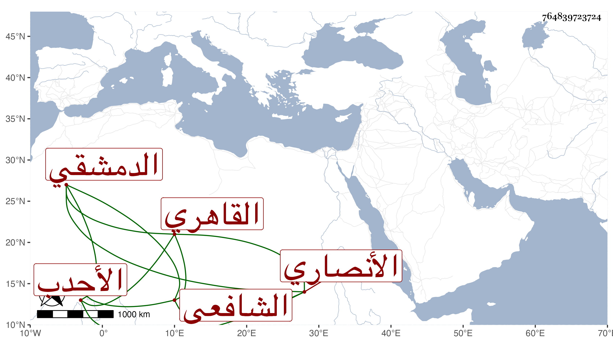

0902Sakhawi.DawLamic.ITO20230111-ara1.EIS1600.764839723724
Biography ID: 764839723724
إبراهيم بن أبي بكر بن محمد بن محمد بن أحمد بن محمد بن عبدالخالق بن عثمان سعد الدين بن الزيني أبي الصدق بن البدر الأنصاري الدمشقي الأصل القاهري الشافعي الأحدب يعرف كسلفه بابن مزهر وهو أكبر بني أبيه وسمع على الشاوي وثواب وزوجه أبوه سعد الملوك إبنة الشرف الأنصاري . مات في رمضان سنة خمس وتسعين وترك اولادا من المشار إليها عوضه الله خيرا .
